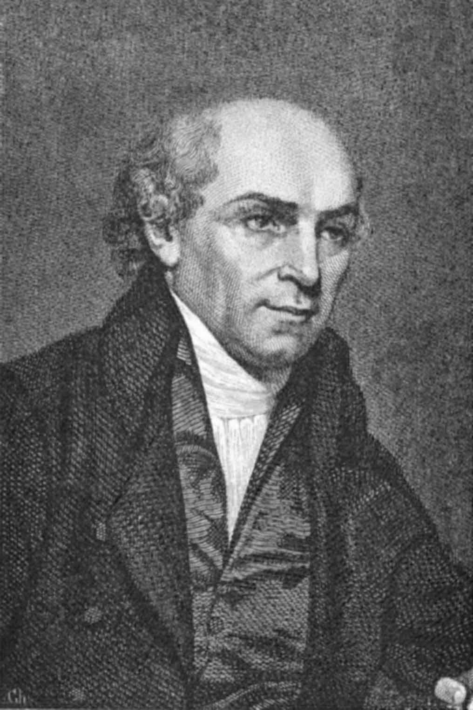
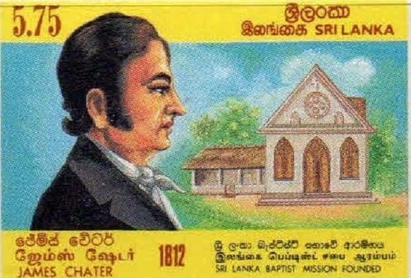
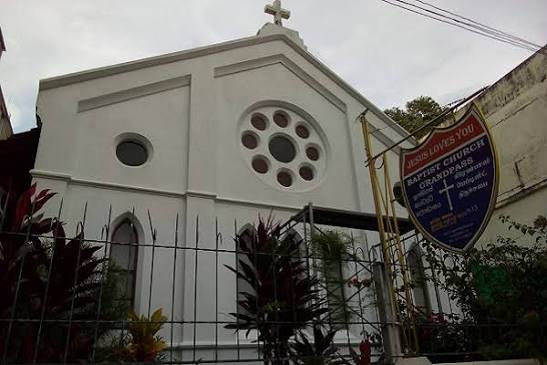
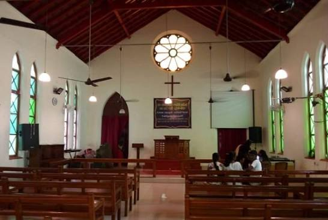
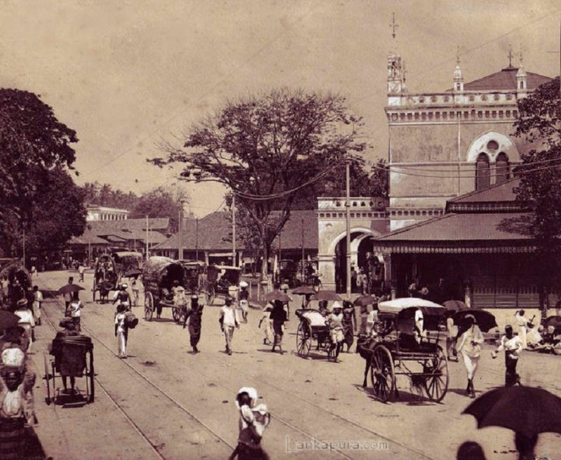
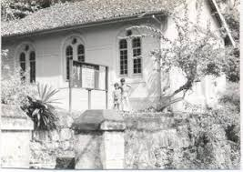
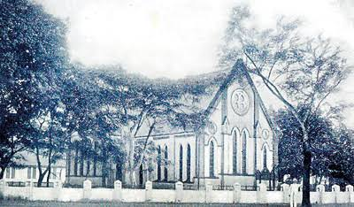

Discover the milestones, people and events that have shaped the Baptist movement in Sri Lanka.
Father of Modern Missions · 1761 – 1834
On 2nd October 1792, twelve clergymen gathered at the home of Widow Wallis in Kettering, England. They passed around a leather snuff box and collected thirteen pounds, three shillings and sixpence — and with it, founded the Baptist Missionary Society (BMS). Among them stood a humble shoemaker-turned-preacher named William Carey, who would go on to transform the landscape of world mission forever.
Born 17th August 1761 in Paulerspury, Northamptonshire, Carey taught himself Greek, Hebrew, Latin, Dutch and French before the age of thirty. His famous sermon at Nottingham that year carried a challenge that still echoes across the centuries:
"Expect great things from God; attempt great things for God."
— Rev. Dr. William Carey, BMS Founding Sermon, 1792Though Carey himself never visited Ceylon, the island bears his name in one of its most enduring institutions. Carey College, Colombo — the only Baptist English school in Sri Lanka — was founded in 1914 as a tribute to the man whose vision sent missionaries to every corner of the earth. There are nine Carey Colleges worldwide — in Sri Lanka, New Zealand, Brazil and beyond — all named for this one extraordinary cobbler from Northamptonshire.

2 October 1792, Kettering, England — with £13 3s 6d in a snuff box.
Translated the Bible into Bengali, Sanskrit and six other major languages.

16 April 1812, Colombo harbour. First Baptist missionary to Ceylon.
Completed the first full Sinhala Bible translation in 1823 — a gift to the nation still in use today.
Pioneer Missionary to Ceylon · 1812 – 1828
On the morning of 16th April 1812, the first Baptist missionaries landed in Colombo harbour. Rev. James Chater — born 6th February 1779 in England, trained at Bristol College and previously a missionary to Burma — stepped ashore with his family, carrying nothing more than a Bible, a burning conviction and a commission from God.
From the very first days, Chater was assisted by a young Burgher boy named Hendrick Siers, who became his devoted companion, interpreter and, later, one of the first ordained local pastors of the Baptist church in Ceylon. Together they began preaching in a disused warehouse in the Pettah, Colombo, before venturing on foot into the surrounding villages.
Chater applied himself with extraordinary devotion to the Sinhalese language. Within two years he was preaching his first sermon in Sinhala. In 1815 he published a Sinhala Grammar Book, and by 1823 he had completed the translation of the entire Sinhala Bible — a gift that endures to this day in the worship of millions.
In 1813, Chater identified Grandpass — a densely populated Sinhalese settlement north of Colombo — as the site for the first permanent Baptist church. He purchased land and began to build, not just a building, but a lasting community of faith. He passed away at sea on 2nd January 1829, leaving behind a church, a Bible, and a generation of believers to carry the mission forward.
On a Sunday morning — 5th October 1817 — amidst a large and expectant gathering, the first Baptist Church in Sri Lanka was opened to the glory of God at Grandpass, Colombo. Rev. Chater preached that day in all three languages of the people: English, Sinhala and Portuguese. A manse was built adjoining the church for the missionary family.
That same year, the most remarkable event of those early days unfolded: a Buddhist priest heard the Gospel preached and surrendered his life to Jesus Christ. He was baptized and given the name Theophilus — meaning "lover of God." He died of a painful illness on 31st October 1817, but his last words became a watchword of courage for every believer who followed:
"I am not afraid to die as I trust in the Grace of God — but I am afraid of pain."
— Theophilus, first Baptist convert in Ceylon, 31 October 1817By 1824, Rev. Chater had baptized eight more converts at Grandpass, including Isaac Whyttu Nadan. In 1826, Sunday Schools were established in all three languages and the morning service was conducted in Sinhala while the evening was held in Portuguese. Membership had grown to 26 — a small but faithful community whose roots would branch into a nationwide fellowship.




"The Apostle of Lanka" · Arrived 1830
When Rev. James Chater passed away at sea in 1829, a spiritual vacuum threatened the young mission. It was filled by a man of extraordinary apostolic courage: Rev. Ebenezer Daniel, born 14th October 1784 in Burford, Oxfordshire. A former pastor of the flourishing Luton Baptist Church for eighteen years, Daniel heard of Chater's death — and felt the call of Ceylon.
He arrived in Colombo on 15th August 1830 with his wife and three daughters. Within a year, Daniel was preaching in Sinhala. He and Rev. Hendrick Siers walked narrow village footpaths, crossed streams on single-log bridges and slept on mats in village homes — all to carry the Good News to wherever people would hear it.
In 1834, a miraculous event transformed three young students from Madampe. Witnessing Rev. Daniel kneel in prayer as floodwaters surged toward a home — and then visibly recede — they were convinced of the reality and power of God. On returning to Madampe, they began the fellowship that would become the Madampe Baptist Church, formally dedicated in 1870.
By 1831, fifteen village schools had been opened. Churches sprang up across the island — Biyanwila, Kotikawatta, Matale, Moratuwa, Gonawela, Ratnapura — each community bearing the seeds that Daniel had sown. He was called to his eternal rest on 2nd June 1844, mourned by people of every rank, religion and nationality. He is rightly remembered as the Apostle of Lanka.
Arrived from St. Albans in November 1838 and took the Gospel to Kandy. Baptized twenty-nine believers at Matale in 1840 and expanded the mission into the hill country alongside Rev. Daniel.
Brought the first Baptist printing press to Kandy. Printed the earliest religious pamphlets and journals in Sinhala and Portuguese — giving the mission its printed voice and enabling Scripture distribution across the island.
The greatest Sinhalese scholar among the missionaries. Translated the whole Bible from Greek and Hebrew into Sinhala and compiled the monumental English-Sinhala Dictionary — 86,000 entries — published posthumously in 1924.
Designed and built Cinnamon Gardens Baptist Church (1877), the Ferguson Memorial Hall and Waldock Memorial Hall. The visionary first President of the Baptist Union of Ceylon, 1895 – 1897.
Launched the "Forward Movement" that recruited a new generation of missionaries for Ceylon. His vision brought Rev. H.J. Charter and others to the island — directly laying the groundwork for the founding of Carey College in 1914.
Served as BMS Field Secretary for 32 years. Organised the great Centenary Celebrations of 1912 and authored Lanka the Resplendent Isle — the definitive history of the Baptist mission in Ceylon.
By the 1890s the Baptist mission in Ceylon had outgrown a single missionary and a warehouse chapel. Dozens of churches had been planted across the island, hundreds of believers baptized and scores of local pastors trained and ordained. The time had come to unite them under one formal, national structure.
In July 1895, through the persistent efforts of Rev. Walter Hankinson, the Baptist Union of Ceylon was formally established. Rev. Fred David Waldock — architect, builder and beloved pastor — was elected its first President, serving from 1895 to 1897.
Waldock's architectural legacy already graced the island. His masterpiece, Cinnamon Gardens Baptist Church (opened 1877), stood as a monument of Gothic simplicity. The Ferguson Memorial Hall, added in 1896, became a centre for ministerial training and church gatherings. In 1913, his family funded the Waldock Memorial Hall — the heart of what would become Carey College.
In 1915, the Baptist Missionary Society granted full local autonomy to the congregations of Ceylon — a landmark recognition that the mission had matured into a self-sustaining, indigenous church family. The Ceylon Baptist Council (CBC) was further formed on 22nd February 1932, under Rev. J.A. Ewing, deepening coordination among the churches.

Rev. Fred David Waldock, 1895–1897. Builder, architect, pastor and unifying leader.
1915 — BMS grants full autonomy to Ceylon congregations, formally recognising an indigenous church.